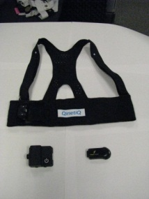
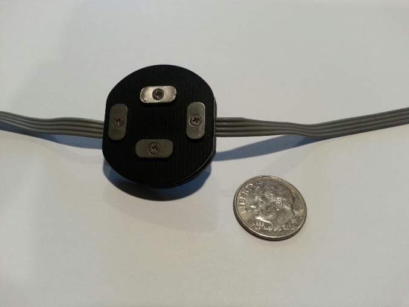
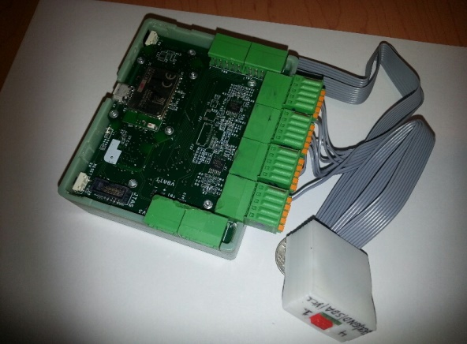

Hardware has to work for the person using it, in the setting where it will be used.
My work connects medical-device verification, wearable product development and prosthetic interfaces. These examples describe my role, the engineering work and its relevance to user-centered development.
Verification support for the JETi thrombectomy system
A medical-device program needs test evidence that connects its hardware, requirements and documentation. My Abbott work supported JETi development and EU MDR activities across capital equipment and disposable components.
Coordinated design documentation and verification and validation activities with engineering, manufacturing, quality and regulatory teams.
Developed aging protocols and coordinated test builds; supported pump-set and suction-tubing verification following aging, environmental conditioning and simulated transport.
Analyzed laboratory results with JMP and worked with external laboratories on electrical safety, EMC/immunity testing and supporting documentation.
Connection to human-centered development
Hands-on experience connecting a physical device to its requirements, test methods and documented evidence, while coordinating the people responsible for design and release.
02
HUMAN SYSTEMS INTEGRATION 2018–2020
Product-development leadership and Program Manager
Air Force wearable research
Physiological-monitoring wearables for Air Force research
At Human Systems Integration, Inc., I supported wearable product development and managed execution of the PHYSIO Phase II program for the Air Force Research Laboratory. The engineering challenge was to bring sensing, garment fit, electronics and practical use into one development plan.
AI-generated concept illustration for GeminiWave. A generic view of garment-integrated sensing, removable electronics and a companion display. It does not depict an actual HSI, QinetiQ or military product, or show measured patient data.
My contribution
Managed PHYSIO program planning, task tracking and interdisciplinary coordination, keeping engineering work connected to product-development goals.
Developed physiological-monitoring hardware and docking concepts and considered how garment integration, interconnects and power requirements affected the design.
Led broader wearable development through prototypes, fabrication, testing, supplier coordination and manufacturing-release activities.
Established product quality requirements and testing procedures addressing usability and performance limits.
Connection to human-centered development
A wearable must fit the body, maintain useful sensor contact and remain practical to put on, remove and maintain. My work connected those user needs with hardware choices and coordinated program execution.
Wearables and AI: development direction and later public research
My next-generation wearable planning in 2019 included consideration of on-device AI hardware. This was concept and roadmap work. A later, separate example appears in the 2024 AFRL Biotech Days Summit program: SoarTech’s SAVIOR research describes integrating an HSI Physio Shirt with AI/ML-assisted remote health monitoring. That publication postdates my HSI employment and is included as technology context, with no claim that I developed SAVIOR or its AI models.
Published HSI technology: figures 5A–5B, U.S. Patent 12,422,887 B2, assigned to Human Systems Integration, Inc. The 2025 patent is shown as company technology context; Faheem is not listed as an inventor. View the patent and named inventors ↗
The published patent identifies government support under W91CRB-18-C-0035 (U.S. Army PEO Soldier) and FA8750-18-C-0175 (Air Force Research Laboratory). These references concern the tactical personal-area-network technology shown in the patent; they are separate from the PHYSIO award above.
My QinetiQ work included the second-generation Remote Physiological Status Monitoring program, RPSM2. It brought together a wearable garment, physiological sensors, removable electronics and remote monitoring for military applications.

Original RPSM2 prototype photograph from my career presentation, slide 92, “Comparison: RPSM 1 to RPSM2.” The garment and electronics are shown off-body, with no participant or physiological recording.
My contribution
Coordinated garment and electronics development, including design reviews of closures, fit and removable-module interfaces.
Worked with garment-manufacturing partners on attachment options and prototype production.
Explored fatigue-assessment research combining ECG, respiration and movement sensing, working with specialist collaborators.
Connection to human-centered development
Sensor placement, comfort, donning and doffing, and access to electronics all affect whether a monitoring garment can be used consistently. This work connected the physical interface to sensing and manufacturing decisions.
RPSM2 development is documented in my 2013 project correspondence and presentation archive. The fatigue work described here was exploratory; no clinical validation or field-performance result is claimed.
04
FOSTER-MILLER / QINETIQ 2007–2014
Program Manager and Principal Investigator
Prosthetic interfaces
Connecting the residual limb, sensing and prosthetic control
Lower-limb prosthetics require close attention to the interface between the person and the device. My research work brought together sensing, socket and liner interfaces, signal processing and knee-control hardware.

Q-EMG sensor. Original photograph from the 2014 EMG Signal Analysis and Prosthetic Control System presentation, slide 25. Sensor development with Michael Engineering.

Q-DAQ with the DACGEN module. Original hardware photograph from the same project presentation, slide 24. No participant or recorded patient signal is shown.
My contribution
Led multidisciplinary advanced lower-limb prosthesis research with electrical, mechanical, software, controls and biomedical specialists.
Directed work on electrodes integrated into liners and sockets, EMG mapping to identify recording sites and a 32-channel portable data-acquisition system.
Supported analysis of data from able-bodied and amputee participants and contributed to research on socket fit and performance for transfemoral amputees.
Connection to human-centered development
Direct experience with human-device interfaces and physiological data, where anatomy, fit and signal quality affect engineering decisions.
Selected coauthored research: Improved Socket Performance and Fit for Transfemoral Amputees (2014); residual-limb EMG and electrode-site identification work presented at AAOP (2011).
05
PROSTHETIC REHABILITATION
Collaborative research work
Virtual reality
Virtual-reality approaches to phantom-limb pain
I collaborated on virtual-reality work addressing phantom-limb pain for people with above-knee amputation. The work explored visual perception and feedback in the context of prosthetic patient therapy.
My contribution
Worked with collaborators on approaches using externally mounted cameras and a head-mounted display to connect simulated visual perception with the user’s experience. This complemented my broader work on prosthetic interfaces and rehabilitation technology.
Connection to human-centered development
Experience considering perception and the interaction between a person, a display and a physical device in a rehabilitation setting.
Exploratory rehabilitation work; no clinical efficacy or quantified pain-reduction outcome is claimed.
06
INDEPENDENT PROJECT 2024
Python data analysis
Technical prototype
A wearable ECG data-analysis prototype
A small, inspectable project demonstrates the path from incoming sensor data to an analysis that an engineer can review.
# Convert signal to numeric
data['ecg_signal'] = pd.to_numeric(data['ecg_signal'], errors='coerce')
data = data.dropna()
# Train Unsupervised Model
model = IsolationForest(contamination=0.1, random_state=42)
model.fit(data)
Unmodified excerpt from my public anomaly_detection.py source file ↗. This shows the implementation, without displaying physiological recordings or implying clinical validation.
What I implemented
Python serial-data collection and CSV storage for ECG readings.
Numeric conversion and data cleaning, followed by Isolation Forest outlier detection.
Signal plots with flagged observations using pandas, scikit-learn and Matplotlib.
Connection to human-centered development
A practical example of handling physiological data and presenting results for review. It complements my hardware and research-program experience.
An independent technical demonstration, not a clinically validated diagnostic system. Flagged outliers are not diagnoses.
ADDITIONAL DEFENSE R&D EXPERIENCE
DARPA program context
My earlier Foster-Miller / QinetiQ RF-structures work included support for the Integrated Sensor is Structure (ISIS) program through Northrop Grumman. DARPA describes ISIS as a joint DARPA / Air Force effort integrating radar and airship structures. This was a separate engineering program from the medical-device, prosthetic and VR work described above.
ENGINEERING WITH THE USER IN VIEW
Discuss your device, your users and your next milestone.
For medical-device R&D, wearable development, prosthetic technology or a focused engineering review.
These summaries describe Faheem Faheem’s prior employment, contract and research roles, plus independent project work. Company and product names identify that experience and do not imply endorsement or current affiliation.